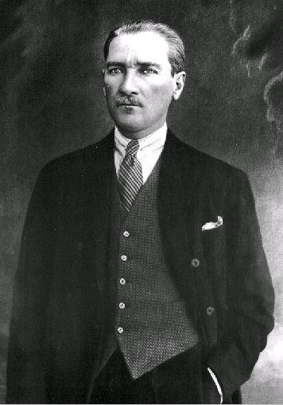

MUSTAPHA KÉMAL

Mustapha Kémal (1881-1938)
Tôi nhớ hồi mười bảy tuổi, cái tuổi phơi phới, lãng mạn, được đọc tiểu thuyết Les désenchantées của Pierre Loti. Về nghệ thuật cùng tình tiết thì truyện đó kém xa Pêchêurs d’Islande. Non nửa cuốn gồm những bức thư của ba thiếu nữ Thổ và một văn sĩ Pháp gởi cho nhau. Truyện xảy ra hồi đầu thế kỷ này[1]. Ba thiếu nữ đó đều là hạng quý phái, vì được học tiếng Pháp, chịu ảnh hưởng văn minh Âu Tây, sinh ra thất vọng (do đó truyện có nhan đề Les désenchantées) về thân phận của họ và buồn tủi chung cho thân phận của đàn bà Thổ. Cha và chồng họ tuy nhiều khi chiều chuộng họ rất mực, nhưng theo phong tục cổ truyền, bắt họ sống một đời cấm cung, không được tiếp bạn trai hay anh em chú bác, và hẽ bước ra khỏi phòng the, dù là chỉ để dạo vườn, thì cũng phải trùm lên mặt một tấm khăn voan kín mít. Đi đâu cũng có bà cô, bà dì hoặc gia nhân già “hộ tống” và dò xét. Họ thấy họ chỉ là một đồ trang sức, một đồ chơi của phái nam nhi mà họ phải suốt đời thờ phụng như một tên lệ thờ lãnh chúa vậy. Ba thiếu nữ đó tình cờ gặp một nhân viên trong sứ quán Pháp, kiêm văn sĩ, đứng tuổi và nghiêm trang. Trước kia họ đã đọc nhiều tác phẩm của văn sĩ đó, từ khi được tiếp xúc họ càng thêm thiện cảm, coi như một người anh cả, lập mưu mô, tìm đủ cách để chuyện trò, thư từ với nhà văn.
Họ biết rằng lén lúc giao thiệp như vậy thì thế nào cũng có ngày tiết lộ mà nguy hiểm đến tính mạng cả đôi bên, nhưng họ không sợ, một là vì họ rán giữ tình cho được trong sạch – mà họ giữ được thật – hai là vì họ coi đời họ như bỏ đi rồi, nên nhất định bày tỏ hết những tình cảnh thê thảm tủi nhục của họ - tức của cả giới phụ nữ Thổ - cho người bạn ngoại quốc để bạn sẽ viết thành sách cho thế giới biết, và may ra nhờ vậy mà nhà cầm quyền Thổ sẽ cải thiện tình trạng của phụ nữ chăng.
Đoạn kết rất buồn: văn sĩ về Pháp ít lâu thì được tin hai người bạn gái Thổ chết, tuổi mới ngoài hai mươi, kẻ thì vì bệnh, kẻ thì vì chán đời.
Tôi nhớ hồi đó đọc xong, tôi ngây ngất trọn một buổi và lâng lâng mấy ngày liền, và tự hỏi không biết dân tộc Thổ tìm cách nào để cải thiện tình trạng cho phụ nữ. Mười năm sau coi cuốn Mustapha Kémal của Sherrill (nhà xuất bản Plon - 1937) tôi mới biết chính cái lúc tôi đọc Les désenchantées thì một vị anh hùng Thổ, Mustapha Kémal đương giải thoát cho cả dân tộc mình, nhất là cho phụ nữ Thổ, và tôi ngưỡng mộ nhà cách mạng đó. Gần đây được đọc thêm cuốn Mustapha Kémal của Benoist Méchin (Albin Michel – 1954), lòng ngưỡng mộ của tôi có hơi kém vì tác giả vô tư hơn Sherrill, đã vạch cho tôi thấy vài cái tật lớn của Mustapha như tật quá tự cao tự đại và quá độc tài, nhưng tôi vẫn còn phục đức sáng suốt, kiên quyết và biết nắm lấy cơ hội của nhà cách mạng Thổ.
°
° °
Benoist Méchin đã khen sự nghiệp của Mustapha Kémal là “vô tiền trong lịch sử”. Ông bảo: “Xin độc giả tưởng tượng giữa cái thời nguy kịch nhất của triều đại Justinien, thế kỷ thứ 5, một người xuất hiện trong cảnh đổ nát của đế quốc La Mã mà xây dựng được một quốc gia Ý võ trang đầy đủ; thì đo, chính sự nghiệp đó là sự nghiệp mà người chiến thắng ở Sakharaya đã làm được cho nước Thổ”.
Dân tộc Thổ Nhĩ Kỳ cùng một giồng giống với dân tộc Mông Cổ, cả hai đều xuất hiện ở trung bộ châu Á có lẽ từ ba, bốn ngàn năm trước. Họ đều là những dân du mục, sống rất giản dị và coi thường sự chết. Lời dưới đây của một sử gia gán cho Attila[2]: “Ngựa ta đã qua miền nào thì cỏ nơi đó không mọc lại được nữa”. Chính là lời miệng của chiến sĩ Thổ. Họ rất hiếu chiến và rất thiện chiến, tấn công như vũ bảo, tàn sát ghê gớm, các dân tộc khác đều kinh khủng. Cuối thế kỷ 13, họ rời trung bộ châu Á, tiến về phương Tây, đi qua Ba Tư, Arménie, tới bờ sông Sakharya ở Tiểu Á (miền Angola[3] ngày nay), thấy đất đai phì nhiêu, định cư luôn tại đó và bắt đầu xâm chiếm các miền chung quanh. Tới giữa thế kỷ 16, họ cường thịnh nhất, lập được một đế quốc[4] rộng gần bằng đế quốc La Mã thời xưa, phía bắc giáp Áo, Ba Lan, Nga, phía đông giáp Ba Tư, phía nam gồm một dãy từ vịnh Ba Tư qua Hồng Hải, Ai Cập, Tripolitaine, Tunisie, Algérie (coi bản đồ trang 108). Họ kiểm soát ba phần tư Địa Trung Hải và một nửa Vịnh Ba Tư. Có thể nói rằng miền phong phú nhất phương Tây hồi đó ở trong tay họ.

Bản đồ in trên trang 108
Nhưng họ có hai nhược điểm:
- Một là không văn minh, không khai hoá được những dân tộc họ đã thắng (về điểm đó họ kém xa Trung Hoa và La Mã) thành thử đế quốc của họ do gươm đao tạo thành, phải giữ bằng gươm đao, mà trong lịch sử nhân loại chưa hề có dân tộc nào thịnh hoài về võ bị được.
- Hai là đế quốc đó gồm nhiều dân tộc quá, nào là Ba Tư, Ả Rập, Ai Cập, Nga, Hung, Lỗ, Hi Lạp…, khác nhau xa về tính tình, ngôn ngữ, tôn giáo, không thể sống đồng hoá để thống nhất thành một quốc gia, nên rất dễ tan rã.
Tới thế kỷ 17 họ suy lần. Các dân tộc ở châu Âu thời đó văn minh hơn họ nhiều, bắt đầu nổi dậy chống cự với họ, và họ thất bại nặng ở Vienne (Áo), mất Budapesth (Hung), lần lượt phải nhượng cho Đức xứ Hung và Transylvanie, cho Nga hải cảng Azov, cho Ba Lan tây bộ Uy Kiên.
Qua thế kỷ 18, họ mất thêm Besnie Serbie, và đạo Hồi mà người Thổ học được của người Ả Rập, bắt đầu bị đạo Ki Tô lấn áp.
Thế kỷ sau, tình hình còn trầm trọng hơn. Đất đai tuy bị khoét một miếng ở phương Bắc, nhưng vẫn còn mênh mông, mà địa thế rất quan trọng: nằm ngay trên ngã ba, chỗ tiếp xúc của Âu, Á, Phi. Như vậy mà trong nước loạn lạc, vua chúa yếu hèn, triều đình không kỷ cương, cường thần chiếm mỗi người một nơi, quan lại tham nhũng, quân lính chuyên môn ăn cướp, thì tất thuộc địa phải nổi lên chống, mà các cường quốc châu Âu làm sao khỏi dòm ngó? Cho nên Hi Lạp tuyên bố độc lập và Pháp đổ bộ lên Angiéri. Thổ chống cự lại yếu ớt đến nỗi Nga Hoàng Nicholas I đã gọi Thổ là “con bệnh của châu Âu”. Một bức hí hoạ đương thời vẽ vua Thổ thiêm thiếp trên giường bệnh, thần chết Nga hiện lên muốn bắt Thổ đi; bên cạnh là hai bác sĩ Anh và Pháp đương bàn phương cứu chữa. Chẳng phải Anh Pháp thương gì Thổ; chỉ vì miếng mồi quá lớn mà địa thế quan trọng quá, không muốn để cho Nga nuốt trọn. Coi bản đồ ta hiểu được tại sao Nga chỉ lăm le chiếm Thổ. Nga tìm đường thông ra biển. Nhưng Bắc Băng Dương suốt năm đầy băng và tuyết, hoàn toàn vô dụng. Trên biển Baltique, có hạm đội của Đức, Na Uy, Thuỵ Điển, Đan Mạch, Phần Lan. Nga khó len ra được, dầu có được thì tới Bắc Hải cũng đụng đầu với hải quân Anh mạnh nhất thế giới. Vậy Nga như bị vây hãm, chỉ có hai đường thoát ra ngoài: một là tiến qua Đông, chiếm trọn Tây Bá Lợi Á, vươn tới Thái Bình Dương, đường đó quá xa mà lại chạm trán với Nhật; hai là do Bắc Hải thông ra Địa Trung Hải, đường này tiện, nhưng cửa ngỏ Constantinople do Thổ gác, nên Nga nhất định phải diệt Thổ.
Anh không chịu vậy, vì nếu Nga chiếm
Thổ thì cứ lịm dần, tình cảnh không khác Trung Hoa thời đó. Ngân khố rỗng không, Thổ phải vay mượn của Anh, Pháp, Đức, Áo. Riêng của Pháp đã phải vay đến một tỷ rưỡi quan. Vậy thì tất phải có gì bảo đảm, và Thổ đem những nguồn lợi và thuế khoá trong nước ra bảo đảm, y như Trung Hoa. Thành thử những bến tàu, kho hàng ở Constantinople, những đường xe lửa, mỏ khoáng chất, nhất là mỏ dầu lửa, rồi thuế đoan, độc quyền giao thông lần lần thuộc về các cường quốc châu Âu hết. “Các cường quốc theo đạo Ki Tô đó, như bầy kên kên đói khát, đậu chung quanh một con bệnh bất tỉnh và kiên nhẫn đợi. Họ sợ lẫn nhau, ganh tị, dò xét nhau và sẵn sàng xâu xé nhau. Không một nước nào dám ra tay trước. Và nhờ vậy đế quốc Thổ tiếp tục thoi thóp…”.
°
° °
Rồi đại chiến thứ nhất bùng nổ. Thổ đứng về phe Đức, có lẽ tưởng rằng Đức sẽ thắng, mà nếu Đức thắng thì sẽ không quên đồng minh, dù đồng minh đàn em. Khốn thay! Đức lại thua, và khi hiệp ước Verseille ký xong, Anh Pháp mới xử cái vụ “phản bội” của Thổ. “Hồi trước tôi giúp chú thắng Nga, nếu không chú đã bị Nga đè bẹp rồi, chú thiếu tiền, chúng tôi cho vay, chú thiếu súng ống để dẹp phiến loạn thì chúng tôi cung cấp, mà rồi chú trả ơn chúng tôi như vậy đó, theo tụi Đức để đập chúng tôi. Được lắm. Lần này thì chúng tôi xoá tên chú trên bản đồ”. Anh, Pháp nghĩ thầm như vậy, và họp nhau ở Sèvres năm 1920 để cắt xẻ đế quốc Thổ, chia hai miếng ở phía Tây (miền Thrace và miền chung quanh Smyrne) cho Hi Lạp; một miếng lớn ở phía Tây Nam trên bờ Địa Trung Hải, ngó ra đảo Chypre cho Ý; cắt một miếng phía Tây Bắc (miền Arménie) cho độc lập, thành nước Cộng hoà Arménie; một miếng nữa ở phía Nam, miếng đó thành xứ tự trị của dân tộc Krude, còn hai miếng, miếng Malatie ở Bắc Syrie dành cho Pháp vì Pháp đã chiếm Syrie, với miếng Irak giáp giới Ba Tư dành cho Anh. Thế là đế quốc Thổ bị cắt xén gần hết, chỉ còn một mảnh đồi núi khô cháy ở bờ biển phía Nam Hắc Hải, rộng khoảng 120.000 cây số vuông. Ngay trong khu vực còn lại đó, chủ quyền của Thổ cũng mất: đời sống dân Thổ do các luật lệ của các cường quốc định đoạt chặt chẽ; tài chánh Thổ do ngoại quốc sử dụng, tài nguyên trong nước do ngoại quốc chiếm để nuôi bọn chiếm đóng, mà quân đội Thổ phải giải tán, chỉ còn giữ lính công an, tới nền giáo dục cũng do ngoại quốc kiểm soát nữa. Người ta tưởng vua Thổ Méhémet VI không chịu ký một hiệp ước nhục nhã như vậy, nhưng người ta đã đoán lầm. Thế là một trong những đế quốc lớn nhất thời hiện đại sụp đổ, nếu không có một vị anh hùng nhảy ra cứu tình thế. Vị anh hùng đó là Mustapha Kémal.
°
° °
Mustapha hồi đó 39 tuổi. Ông sanh năm 1881 trong một gia đình trung lưu ở Salonique. Cha là Ali Rhiza Efendi, làm một tiểu công chức ở nha Quan thuế, sau nghỉ việc về buôn cây, nhưng không phát đạt. Mẹ là Zobeida Hanim.
Ngay từ hồi nhỏ, Mustapha đã có tính bướng bỉnh, nóng nảy. Coi hình ông, ta thấy ngay một người hoạt động, cương quyết, tàn bạo: trán cao, môi mỏng mà mím lại, lưỡng quyền nhô ra, lông mày rậm, nhất là cặp mắt sắc, dữ.
Mồ côi cha sớm. Mới mười hai tuổi đã biết hướng về nghề võ. Học ở trường sĩ quan ba năm, vào hạng giỏi, rồi học ba năm nữa ở trường Tham mưu, hai năm sau nữa được lên chức đại uý. Có khiếu về Toán và Sinh ngữ, thông tiếng Pháp, tiếng Đức, và ngay từ hồi đi học, đã ham học môn chính trị, lén kiếm những tác phẩm của Montesquieu, Voltaire, Rousseau để đọc. Hoàng gia Thổ cấm những sách đó, kẻ nào trái lệnh thì bị nhốt khám vì tội phản quốc. Tất nhiên càng cấm, ông lại càng kiếm cách đọc.
Ông bất bình về dã tâm của ngoại quốc và thái độ bất lực của hoàng gia, gia nhập hội kín, viết những bài hô hào quốc dân chống lại ngoại quốc, tranh đấu cho nước được tự do, cùng với bạn bè bị bắt giam (1904) ở Stamboul. Suốt ngày ông đi lại lại trong xà lim, bực bội như con hổ bị nhốt. Bạn bè lo rằng ông có thể bị thủ tiêu, không cần xét xử gì cả. Nhưng rồi một hôm hai người lính đeo khí giới lại dẫn ông tới Bộ Quốc phòng. Người ta biết tài cầm quân của ông, muốn thu phục ông, tha cho ông tội chết và đổi ông tới Damas để dẹp giặc.
Người ta lầm: con người đó không thể nào thu phục được nếu tình cảnh trong nước không thay đổi. Ít lâu sau, ông lại vô một đảng cách mạng khác, đảng Cấp Tiến và Đoàn Kết, nhưng vì không được lãnh trách nhiệm quan trọng, nên ông chán nản, phản đối và bị loại. Ông không chịu dưới quyền ai hết.
Mùa xuân 1908, đảng đó tuyên bố chống lại hoàng gia, không ngờ mà thành công. Chính phủ phái quân đội tới dẹp, quân lính ôm súng qua phe cách mạng. Nhưng vua Abdul Hamid, khôn như con cáo già, giả đò nhượng bộ, đổ hết các lỗi cho các cận thần và tuyên bố chế độ lập hiến, niềm nở tiếp đón các nhà cách mạng. Quốc dân tưởng là bước vào một kỷ nguyên mới rực rỡ, không ngờ sáu tháng sau, tình thế còn loạn hơn trước: đảng cách mạng chỉ có ba trăm đảng viên, không được huấn luyện, không có chương trình, hoạt động lộn xộn, Abdul Hamid vu họ là bọn vô thần, là “kẻ thù của Chúa”, nên dân chúng và quân đội nhiều nơi nổi lên chống cách mạng. Nhờ sự hy sinh và tài cầm quân của một số sĩ quan cách mạng, trong đó người xuất sắc nhất là Mustapha Kémal, quân cách mạng thắng. Abdul Hamid bị truất ngôi, em lên thay, tức vua Méhémet V, và quyền hành ở trong tay nhà cách mạng Enver.
Enver trước đó hô hào đuổi người Âu ra khỏi nước, bây giờ kết thân với Đức, nhờ Đức tổ chức, huấn luyện quân đội. Rốt cuộc tình thế không hơn trước chút nào. Mustapha Kémal bất bình, tới đâu cũng hô hào chống Đức, chống chính sách của chính phủ. Ông nói:
“Các cường quốc còn tham tàn hơn bao giờ nữa; Đức đã bóp cổ Thổ. Các nhà tài chánh của họ ôm lấy hết các độc quyền và nhượng quyền (…). Thổ bị bó tay để cho sài lang và kên kên rút rỉa (…) Tình trạng đó không thể dung túng được nữa (…). Phải trả giang sơn Thổ lại cho người Thổ…”.
Enver tất nhiên ghét ông, nhưng vẫn phục tài cầm quân của ông, tìm cách đưa ông đi xa, và từ 1911 đến 1914, ông phải đi chiến đấu với Ý ở Tripoli, với Monténégro, Serbie, Hi Lạp và Bulgarie, Andrinople. Thắng bại chưa phân thì đại chiến thứ nhất nổ ra.
Thổ đứng về phe Đức như tôi đã nói. Năm 1915, liên quân Anh Pháp liền đem hải quân tới Dardanielles, cuống họng của Thổ, rồi đổ bộ lên bán đảo Gallipoli. Ông cầm đầu một liên đội, chống cự lại. Nhờ đoán được đúng chiến thuật của địch, nhờ tính toán rất kỹ lưỡng, hành quân gan dạ và cấp tốc không đợi lệnh trên, Mustapha Kémal chặn đứng được địch.
Một tháng sau, một đại tá Đức đem viện binh tới. Lúc đó ông mới đeo lon trung tá. Viên sĩ quan Đức nhã nhặn đề nghị thoả thuận với ông về việc chỉ huy. Ông trả lời ngay: “Tôi biết rõ địa thế và địch hơn ông. Tôi phải chỉ huy”. Ông tự tin lạ lùng và làm cho người khác cũng phải tin ông. Bộ Tham mưu Đức đành để ông chỉ huy mặt trận Dardanielles, và ba lần ông chặn đứng được liên quân Anh Pháp. Rốt cuộc, Anh Pháp phải nhận rằng đã đem non nửa triệu binh sĩ qua Dardanielles mà chẳng có kết quả gì cả, không làm cho Đức phải rút quân ở mặt trận Pháp về, và cuối năm đó, họ quyết định thôi tấn công Thổ nữa. Trận đó rất lớn: mỗi bên thiệt 250.000 sĩ tốt. Anh Pháp mất mặt mà danh tiếng Mustapha Kémal nổi lên như cồn.
Rồi Đức thua. Đình chiến. Mustapha trở về
Enver đã trốn qua Đức để khỏi bị Đồng minh trị tội. Mustapha Kémal vô yết kiến Méhémet VI[5], tưởng nhà vua này còn nghị lực, có tâm hồn hơn Méhémet V, đề nghị:
- Xin bệ hạ cho lập ngay một nội các mạnh mẽ, có thể thương thuyết ngang hàng với Đồng minh. Diệt hết mặc cảm rằng mình là kẻ chiến bại đi. Phải hô hào quốc dân can đảm lên. Xin bệ hạ nghe tôi. Tôi đã suy nghĩ kỹ rồi. Bệ hạ giao cho tôi ghế Thượng thư bộ Binh và cho tôi quyền hành, tôi sẽ cứu được nước.
Méhémet VI biết rõ tài ông, sợ ông sẽ lật ngai vàng nếu giao cả quyền hành cho ông, nên chỉ ừ hử, rồi ít lâu sau phong ông chức Khâm sai đại thần ở miền Bắc kiêm Thống đốc các tỉnh miền Đông, chủ yếu đưa ông ra miền biên giới, xa hẳn kinh đô, không ngờ như vậy là tạo cho ông hai điều kiện rất tốt để làm cách mạng, tức địa hoà và nhân hoà, vì những miền đó quân đội chiếm đóng của Anh, Pháp, Ý chưa tới, ông có thể dụng võ được mà dân chúng cảm phục ông đã đánh thắng Anh Pháp ở Dardanelles. Ông nắm lấy ngay cơ hội đầu tiên là dự bị, đợi cơ hội nữa đem lại cho ông điều kiện thứ ba – tức thiên thời – để hoạt động.
Ông đã có chủ kiến: vua Méhémet VI nhu nhược mà cố bám lấy địa vị, không thể trông cậy gì được ở triều đình nữa. Ông sẽ chống lại Hoàng gia, đồng thời chống với ngoại quốc. Chống với ngoại quốc thì phải dùng võ lực, chống với Hoàng gia thì phải dùng chính trị. Muốn vậy phải dựa vào dân chúng, phải gây một niềm tin tưởng mãnh liệt trong quần chúng, nhắc lại những thời oanh liệt của đế quốc Thổ mà gợi lòng ái quốc của đồng bào. Ta thử tưởng tượng tình thế của Thổ lúc đó, một nước chiến bại, nghèo khổ, sắp bị chia xẻ, mới thấy sứ mạng của ông nặng nhọc, khó khăn ra sao.
Khi đã hô hào quần chúng theo ông, ông đánh điện về triều xin từ chức, rồi họp hội nghị Erzeroum và ở
Hoàng gia phái nhiều đội quân Krude – một giống sơn nhân nổi tiếng tàn bạo – tới dẹp hội nghị. Mustapha Kémal cầm đầu hai đoàn kỵ binh, tấn công tức thì, không cho quân Krude đề phòng, và vài ngày sau trở về Sivas, được dân chúng coi như một vị cứu quốc.
Hội nghị đổi tên là Quốc hội, lựa
Tới khi hay tin nhà vua đã phản quốc, hạ bút một cách nhục nhã vào hiệp ước Sèvres, dân chúng mới hết trông cậy vào Hoàng gia, nổi lên phản đối. Điều kiện thứ ba – tức thiên thời – chờ đợi một năm nay, bây giờ đã tới, mà cơ hội đó, chính các cường quốc tham tàn Anh, Pháp, Ý đã đem lại cho Mustapha Kémal. Ông nắm lấy liền. Có tuyên truyền, huấn luyện quần chúng hàng chục năm cũng không làm họ hăng hái, mắm môi quyết tâm diệt kẻ thù chung, bằng những điều khoản vô nhân đạo trong hiệp định Sèvres đó.
Khắp nước Thổ, dân chúng không tuân lệnh Hoàng gia nữa.
Khắp nước Thổ từ thành thị đến thôn quê, đến thâm sơn cùng cốc, đến cả những phòng khuê kín mít, già trẻ trai gái không ai bảo ai, cùng đứng phắt dậy, nghiến răng hướng về Constantinople, nơi quân đội Đồng minh đương chiếm đóng, quyết diệt tan bọn xâm lăng; người mài gươm, kẻ đúc đạn, người may áo cho chiến sĩ, kẻ quyên tiền cho quỹ cứu quốc. Những bài ca trầm hùng vang lên ở các cửa miệng, những tia lửa căm hờn hiện lên ở các khoé mắt. Không đợi lệnh triệu tập, họ tự động dắt nhau từng đoàn đến
Các tàu Nga chở khí giới tới bờ biển Hắc Hải tiếp tế quân cách mạng. Tàu ghé nơi nào, tức thì dân cư chung quanh, cả trai lẫn gái, tự động khiêng vác súng ống, đạn dược, cấp tốc chuyển qua làng bên, cứ tiến từng làng từng làng như vậy cho tới
Triều đình đem quân tới diệt, nhưng chưa tới
Ở Ba Lê, ba chính khách Anh, Pháp, Ý: Lloyd George, Clémenceau và
Mustapha Kémal phái Ismet Pacha tấn công Hi Lạp ở phía Tây. Lực lượng Hi Lạp gấp đôi lực lượng Thổ, vậy mà nhờ lòng can đảm của quân cách mạng, nhờ tài điều khiển của Ismet, đầu năm 1921, Thổ thắng được hai trận lớn ở Ineunu.
Được tin đó, Mustapha viết thư khen Ismet:
“Trong lịch sử thế giới, hiếm thất những nhà cầm quân mà sứ mạng nặng nề như sứ mạng của ông trong những trận Ineunu (…), ông không những thắng kẻ thù mà còn cứu được quốc gia nữa. Hôm nay toàn quốc, kể cả những miền đau đớn còn bị chiếm đóng, ăn mừng sự thắng trận của ông (…)”.
Sau trận đó, Thổ còn thắng một trận nữa, ở bên bờ sông Sakaraya. Mustapha đã chỉ huy và cứu kinh đô
Chính những bại trận liên tiếp đó của Hi Lạp làm cho Anh, Pháp, Ý chán nản, không muốn ủng hộ Hi nữa. Họ còn hèn hạ đến nỗi trở mặt, đề nghị đứng ra điều đình giữa Hi và Thổ, vì họ biết rằng Thổ sẽ thắng mà như vậy thì lúc này làm bộ nhân từ, giúp Thổ hoà giải với Hi, tất Thổ sẽ mang ơn mà sau này sẽ vớt vát được it nhiều quyền lợi ở Thổ. Nhưng đề nghị đó bị Hi gạt bỏ. Anh, Pháp, Ý bất bình với Hi, quay lại mơn trớn với Thổ. Ý thì bán ngầm khí giới cho Thổ, còn Pháp thì ngoại giao lén với Thổ, ve vãn Mustapha Kémal, phái Franklin Bouillon qua Thổ ký một mật ước với chính phủ cách mạng. Thế là Pháp đã gạt Méhémet VI ra ngoài và mặc nhận rằng hiệp ước Sèvres không còn hiệu lực. Rồi Pháp rút quân chiếm đóng ra khỏi Cilicie, nhờ vậy Mustapha kéo được tám vạn quân ở miền đó về mặt trận Hi (cuối năm 1921).
Thắng lợi đó rất lớn và Mustapha càng tin thế nào cũng đánh bại được Hi, nên đầu năm sau, ông gọi thêm lính, chuẩn bị thêm quân nhu. Toàn dân hưởng ứng; nhà nào cũng giúp đỡ quân đội: quần áo, giày dép, mền mùng, lúa, muối, rơm, đường, đèn cầy, đinh, bột… Khắp miền Anatolie, đường xá chật những xe bò, xe ngựa, xe lừa, chở đủ các thức ăn, dụng cụ để tiếp tế quân đội, vui hơn là chợ phiên. Đầu mùa hè đó, một đạo quân mới, hăng hái và tinh nhuệ, đã sẵn sàng tác chiến.
Lúc này quân lực Thổ gần ngang quân lực Hi: 103.000 Thổ và 132.000 Hi.
Hừng sáng hôm 26 tháng 8 năm 1922, Mustapha Kémal hô hào quân lính:
“Anh em sĩ tốt! Tiến!ục tiêu: Địa Trung Hải”.
Ông đã định rõ chiến thuật, xuất kỳ bất ý, tấn công ồ ạt, làm quân Hi trở tay không kịp, thua to ở Dumulu Punar, và luôn mười ngày, bị quân Thổ đuổi theo chém giết cho tới bờ biển Địa Trung Hải. Tướng Tricopis, tổng tư lệnh và tướng Dionys, tham mưu trưởng Hi đều bị bắt. Hàng vạn lính Hi bị giết, non năm trăm ngàn bị cầm tù. Chỉ một số ít chạy được tới bờ biển, nhờ tàu biển và thuyền câu mà trốn thoát. Dọc một con đường từ Dumulu Punar tới Smyrne[6], nhất vlà tại châu thành Smyrne, thây binh sĩ và thường dân Hi chồng chất lên nhau thành đống.
Khi người ta dắt Tricopis và Dionys vào liều của Mustapha Kémal, ông tiếp đãi họ nhã nhặn; mời họ giải khát rồi cùng phê bình chiến lược của hai bên, làm cho họ phải khâm phục.
Sau trận đó, quân đội Hi tụ cả ở
Ông kêu hai đội quân thiện chiến lại giảng cho họ hiểu mục đích của ông. Rồi ra lệnh cho họ tiến về phía quân đội Anh, họng súng chĩa xuống đất, dù quân đội Anh có ra lệnh ngừng thì cũng không được ngừng, cứ việc yên lặng tiến, nhất định không được nổ một phát súng. Như vậy hai đội quân đó phải bình tĩnh, gan dạ và có kỹ luật phi thường.
Sáng ngày 29 tháng 9, hiểu và nhớ kỹ chỉ thị rồi, họ khởi hành. Trong một cảnh yên lặng lạnh lẽo kinh khủng, người ta chỉ nghe tiếng giày rôp rộp của họ. Họ đã tới gần Chanak, đã trông thấy trại quân Anh ở Chanak. Thần kinh họ căn thẳng gần như muốn đứt. Chỉ một kẻ nào đó hoảng hốt, đưa bậy cây súng lên hay bỏ chạy là chiến tranh với Anh sẽ nổ mà nếu nổ thì Thổ sẽ lâm nguy.
Về phía Anh, tổng tư lệnh Chales Haring ton ra lệnh không cho quân đội Thổ qua, nhưng cũng không nổ súng đầu tiên. Quân đội Thổ đã thấy hàng ngũ Anh. Họ vẫn yên lặng tiến, họng súng chĩa xuống đất. Họ không chịu ngừng mà cũng không tấn công. Rộp, rộp, họ cứ tiến đều đều. Sĩ quan Anh không biết xử trí ra sao, tinh thần rối loạn. Không khí hừng hực như cơn dông. Hai bên cách nhau vài chục thước.
Một sĩ quan Anh ra lệnh:
- Nhắm!
Người ta nghe một tiếng “cắc”, súng chĩa cả về phía Thổ. Quân Thổ vẫn bình tĩnh tiến.
Vừa đúng lúc đó, một người chạy xe máy dầu, phất một cây cờ chạy tới, ngừng trước viên đại tá Anh.
Sĩ quan Anh ra lệnh:
- Hạ súng!
Đồng thời, sĩ quan Thổ cũng ra lệnh:
- Ngừng!
Thế là Mustapha Kémal nhờ nghị lực phi thường đã thắng. Và Charles Harington đã nhường bước. Thực ra cũng do công của Franklin Bouillon, người đại diện cho chính phủ Pháp. Pháp không muốn châu Âu bị vùi trong cơn binh hoả một lần nữa, nên Boillon đã cam đoan Mustapha rằng sẽ điều đình với Anh, Ý để buộc Hi phải rút quân ra khỏi Thrace, và sẽ trả lại Thrace cho Thổ. Mustapha bằng lòng rút quân về.
Tháng 10 năm 1922, Anh, Pháp, Ý muốn ký hiệp ước mới với Thổ; mời cả phe triều đình và phe cách mạng Thổ tới
Chỉ còn một cách là Quốc hội ban hành một luật tách biệt Vương vị của Thổ Nhĩ Kỳ và Vương vị của Hồi giáo, huỷ bỏ Vương vị Thổ đi và đuổi Méhémet VI ra khỏi cõi.
Ta nên nhớ rằng Vương vị của Hồi giáo là chức do nhà sáng lập ra Hồi giáo, tức Mahomet, truyền lại cho con cháu để trị vì các tín đồ Hồi. Mới đầu chức đó gồm cả giáo quyền (quyền về tôn giáo) và thế quyền (quyền trong thế tục). Sau thế quyền tách ra giao cho Vương vị của mỗi nước.
Dân tộc Thổ, trước khi theo Hồi giáo của Ả Rập, đã có vua, nhưng vua hồi đó chỉ có thế quyền thôi; từ khi theo Hồi giáo, thì nhà vua kiêm luôn cả giáo quyền nữa. Như vậy vua Méhémet VI vừa là một hoàng đế vừa là là một giáo hoàng[7]. Mustapha biết rằng dân chúng chỉ khinh Méhémet VI ở địa vị thế quyền, chưa dám đã động đến tôn giáo, nên ông đề nghị tách hai quyền đó ra để có thể trục xuất nhà vua được.
Quốc hội mới nghe đề nghị đó, kinh hoảng, không dám đi quá xa như vậy. Ông phải giảng giải cho họ hiểu rồi dùng uy quyền bức họ, họ mới dám ký vào đạo luật cách mạng đó. Họ sợ mất lòng dân, mà không ngờ dân chúng mang ơn họ, kéo nhau lại Quốc hội để hoan hô.
Méhémet vội thu nhặt châu báu trong cung, lén xuống tàu Anh trốn qua châu Âu. Khi xuống tàu rồi, đức chí tôn xét lại đồ đạt, thấy thiếu một chiếc va li, mắng chửi thậm tệ một tên thái giám. Người ta phải tìm khắp nơi cho ngài. Tìm được rồi, ngài mở ra coi, soát lại thấy đủ cả, khoan khoái. Hú hồn, tất cả những châu báu và bộ đồ pha cà phê bằng vàng của ngài ở trong va li đó.
°
° °
Ngày mùng một tháng 11 năm 1922, Méhémet VI bị truất ngôi rồi, Quốc hội Thổ lên cầm quyền. Mustapha Kémal lập một đảng dân chủ, lấy tên là Quốc dân đảng và ông hô hào các nhà ái quốc, các nghệ sĩ, các nhà bác học góp ý kiến để lập chương trình hành động của đảng. Ông viết thư hỏi ý kiến những người được dân chúng ngưỡng mộ và tôn trọng tất cả các ý kiến đó. Đảng lập xong, ông được bầu làm chủ tịch, rồi sau được bầu làm Tổng thống nước Cộng hoà Thổ.
Cũng cuối năm đó ông phái Ismet Pacha – vị anh hùng ở Ineunu – cầm đầu một phái đoàn qua
Hiệp ước
Thành công đó đã làm cho thế giới ngạc nhiên, các quốc gia ở Cận Đông và Trung Đông bừng tỉnh. Ấn Độ, Ba Tư, A Phú Hãn, các nước châu Phi, cả Trung Hoa nữa đánh điện mừng Mustapha Kémal và ca tụng ông. Các nước nhược tiểu bị áp bức hướng về vị anh hùng đó, coi ông như một người anh cả có thể giúp đỡ bênh vực mình được; người ta kết thân với ông, yêu cầu ông cầm đầu một phong trào chỉ huy một thánh chiến để cho Hồi giáo chống lại Công giáo, phương Đông chống lại phương Tây. Tóm lại, Thổ lúc đó đóng cái vai của Nhật sau khi thắng Nga năm 1905. Nhưng Mustapha Kémal chưa tính xa như vậy, còn lo canh tân, tái thiết quốc gia cho mạnh đã. Tuần tự và cương quyết, ông thực hành trong sáu năm nhiều cuộc cách mạng nữa, làm cho Thổ từ một nước hủ lậu nhất thế giới thành một nước tân tiến gần theo kịp các cường quốc Âu châu.
°
° °
Ở trên ta thấy ông thực hành được hai cuộc cách mạng tách vương quyền và giáo quyền và thành lập chính thể Cộng hoà. Thành lập chính thể Cộng hoà tức thị là huỷ bỏ vương quyền (Sultanat), bây giờ năm 1924 ông lại huỷ bỏ luôn cả giáo quyền nữa (Califat) nữa.
Méhémet VI bị truất ngôi, thì mất luôn cả giáo quyền. Quốc hội đề cử một người trong hoàng tộc là Abdul Mejid làm Calife mà giữ giáo quyền. Giải quyết như vậy chỉ là tạm bợ vì Mustapha Kémal hiểu rõ rằng bất kỳ ở nước nào, bao giờ cũng có một số người thông minh hoặc vô tình hoặc cố ý lợi dụng tôn giáo để làm chính trị, lợi dụng lòng mê tín của quốc dân để mưu quyền lợi riêng cho mình hoặc cho đảng mình. Cho nên ông nhất định truất luôn cả hai chức giáo giáo chủ. Ta phải khen ông điều này: ông đã làm Tổng thống Thổ rất có thể giảng giảng cho Quốc hội để Quốc hội trao luôn giáo quyền cho ông, như vậy chắc Quốc hội sẽ không từ chối mà quyền hành của ông tăng lên gắp đôi; chính một số dân biểu đề nghị với ông như vậy, nhưng ông không chịu vì như thế trái với nguyên tắc tách thế quyền với giáo quyền mà ông đã long trọng tuyên bố hai năm trước. Ông cũng biết rằng phế ngôi giáo chủ đi thì quốc dân sẽ phản đối (dân Thổ rất ngoan đạo) mà quân đội cũng có thể phản đối nữa. Nhưng ông cương quyết giữ clập trường, giảng cho quốc dân hiểu rằng ông vẫn tôn trọng tín ngưỡng của mọi người, chỉ bỏ giáo quyền đi thôi, vì quyền đó là di tích của thời cổ, thời mà dân tộc Ả Rập bị dân tộc Thổ đánh bại, muốn lợi dụng tôn giáo để ngấm ngầm ảnh hưởng đến tâm hồn dân Thổ rồi đến chính trị của người Thổ. Quốc hội hiểu ông và tháng 3 năm 1924, biểu quyết một đạo luật bãi bỏ giáo quyền, dẹp Bộ Tôn giáo, dẹp các toà án tôn giáo, và dẹp luôn cả các trường học thuộc về giáo hội mà trong đó ngoài thánh kinh Koran ra, người ta không dạy học sinh một môn nào khác. Thế là các dân tộc khác theo đạo Hồi hồi, nhất là dân tộc Ả Rập không còn cơ hội để xen vào chính trị của Thổ được nữa.
°
° °
Sau đạo luật đó, Thổ thành một nước Cộng hoà dân chủ không có quốc giáo, và tôn giáo nào cũng ngang hàng nhau. Đế quốc Thổ xưa kia gồm cả người Âu, người Á lẫn người Phi, tính ra có đến hơn chục giống: Ả Rập, Ai Cập, Ba Tư, Ma Rốc, Nga, Hi Lạp, Lỗ… Bây giờ Thổ mất hết thuộc địa, giang sơn thu vào một khu hình chữ nhật từ Arménie qua biển Egée, từ Hắc Hải xuống Syrie và bờ biển ngó ra đảo Chypre (coi bản đồ trên) nhưng trong khu đó cũng còn đủ các giống người, mà trừ Thổ ra, thì đông nhất là Ả Rập và Hi Lạp.
http://www.shunya.net/Pictures/Turkey/turkey.gif
Bản đồ Thổ Nhĩ Kỳ ngày nay
(Nguồn: maurymccown.com)
Đối với người Hi Lạp ông đã có cách giải quyết: trong hiệp ước Lausanne đã có một khoản buộc hai triệu người Hi Lạp phải trở về xứ sở của họ mà họ chưa hề được thấy; ngược lại những người Thổ lập nghiệp trên đất Hi Lạp phải trở về Thổ. Chính sách đó có vẻ tàn bạo quá, làm cho dân chúng – cả Hi lẫn Thổ - ta oán rất nhiều; nhưng đứng về phương diện quốc gia mà xét, thì ta phải nhận rằng hễ muốn cho Thổ mau thành một nước mạnh mẻ, thống nhất, thì không thể làm cách khác được.
Còn đối với người phương Đông như Ả Rập, Ba Tư, Ai Cập, Syrie… tức những người cùng tôn giáo với Thổ, lại đa số đồng hoá với Thổ, có kẻ nắm những địa vị quan trọng trong chính quyền, trên thương trường của Thổ thì Mustapha Kémal không thể dùng chính sách trên được. Ông nghĩ ra một giải pháp: Buộc những người dân Thổ và những người ngoại quốc nhập tịch Thổ, phải bỏ cái nón phê (fez) để phân biệt với các người phương Đông ở trên đất Thổ mà có quốc tịch khác. Chắc độc giả đã đôi lần trông thấy chiếc nón đó ở Sài Gòn: nó làm bằng len hay nhung màu đỏ hoặc trắng, hình nón cụt, dưới rộng trên hẹp. Hầu hết các dân tộc Cận Đông đều dùng nó từ thế kỷ 18, nó thành một thứ quốc tuý của họ, nay nhất đán bảo họ bỏ thì làm sao họ chịu nghe? Nhất là khi bảo họ phải đội cái nón Tây có lưỡi trai, có vành che trán của các tín đồ Ki Tô thì họ lại càng phẫn uất: “Tín đồ Ki Tô đội thứ nón có lưỡi trai đó vì họ có tội lỗi, giả dối, không dám cho Thượng đế ngó thấy mặt họ; chứ bọn tôi, chính trực quang minh, tội lỗi gì mà phải đội?
Ông cố gắng giảng giải dẫn dụ họ hiểu rằng các dân tộc văn minh ở Âu, Mỹ, theo đạo Ki Tô hay không đều đội thứ nón đó để che nắng, người Thổ nên bắt chước họ để tỏ rằng mình cũng văn minh như họ. Nhưng không, nhất định dân chúng không chịu nghe. Ông phải dùng bạo lực, mới đầu bắt các công chức bỏ nón phê (tháng chín năm 1929), rồi một tháng sau cấm tất cả các dân chúng đội nón đó. Ông lại độc tài đến nỗi sai cảnh sát đánh đập, nhốt khám những kẻ nào trái lệnh. Thật là quá tàn nhẫn, cần gì phải gấp như vậy? Vả lại muốn phân biệt người Thổ với các giống người khác thì thiếu gì các mà phải chà đạp tâm lý của dân chúng, những kẻ đã cùng với ông hi sinh tánh mạng tài sản cho Tổ quốc? Loạn nổi lên ở mười hai tỉnh, một số cảnh sát bị dân chúng giết. Các linh mục Hồi hồi ngầm tưới dầu vào lửa. Mustapha lại càng giận, ra lệnh chém, bắn hàng ngàn người. Dân chúng bị đàn áp quá, phải miễn cưỡng theo, sau này Mustapha mới thấy ảnh hưởng của chính sách độc tài đến tàn nhẫn đó.
°
° °
Trừ cải cách đó ra, những cải cách khác tuy cũng mạnh bạo mà có lợi cho dân Thổ.
Năm 1926, Quốc hội biểu quyết một đạo luật bắt buộc quốc dân phải dùng Tây lịch “và ngày kế ngày 31 tháng 12 năm 1341 của cựu lịch sẽ là ngày mùng một tháng giêng năm 1926”. Thế là kỷ nguyên Hồi giáo (bắt đầu từ năm 622 tức năm Mahomet ở thành Mecque trốn sang Médine) đã dùng trên một ngàn ba trăm năm nay bị bãi bỏ. Nhưng cũng nóng nảy quá, Mustapha ra hạn trong bốn ngày là lệnh phải thi hành liền.
Cũng trong năm đó, Quốc hội cho thi hành những bộ luật mới. Sau khi những toà án tôn giáo đã bãi bỏ năm 1924, Mustapha Kémal cho lập một cơ quan tư pháp tạm thời và yêu cầu các luật gia soạn ngay những bộ luật mới. Chỉ trong hai năm công việc hoàn thành, trên thế giới không có nước nào tiến nhanh như vậy. Mà tiến rất vững: các cường quốc châu Âu đều nhận rằng pháp điển Thổ hoàn hảo, có tính cách dân chủ và hợp với nhu cầu của Thổ là nâng cao địa vị phụ nữ. Được như vậy là nhờ các luật gia Thổ đã sáng suốt châm chước bộ luật dân sự của Thuỵ Sĩ, bộ hình luật của Ý và bộ thương luật của Đức, tức là những bộ luật có tiếng thế giới. Ta cứ xét một điều này đủ rõ: hơn cả hình luật của Pháp, Anh thời đó, hình luật Thổ có những mục về sự cải hoá tâm hồn tội nhân: trong khi bị giam, họ được dạy dỗ mà những kẻ mới phạm lần đầu, dù là tội nặng, cũng được giam riêng, không cho sống lẫn lộn với những kẻ tái phạm nhiều lần. Hiện nay nước ta vẫn chưa có được một đạo luật như vậy.
Đầu năm 1929, Quốc hội ban hành hai đạo luật nữa để cách mạng văn tự Thổ. Trước kia người Thổ dùng chữ Ả Rập và chữ số Thổ. Lối chữ đó vừa bất tiện, vừa khó học thành thử 90 phần trăm dân chúng mù chữ. Mustapha Kémal quyết định huỷ bỏ hết mà dùng chữ La tinh và những “síp” quốc tế tức những “síp” mà ta gọi là “síp” Ả Rập. Ông giao một nhóm nhà ngôn ngữ học nghiên cứu việc La tinh hoá tiếng Thổ; khi những mẫu tự và vần Thổ đã định rồi, ông cho đúc những mẫu tự bằng vàng rồi gắn lên một tấm bảng, và nêu gương cho quốc dân, ông bắt đầu học liền. Lối viết mới hoàn toàn sát theo cách nói, cho nên rất dễ học, và khi đích thân học thuộc, ông ra lệnh cho toàn quốc dùng.
Dân chúng rất hoan nghênh lối chữ mới: người ta gỡ các bảng đề tên sở, tên tiệm, bôi bỏ chữ Ả Rập mà theo chữ mới; ở góc đường, đầu chợ chỗ nào cũng dựng những tám bảng ghi mẫu chữ mới; nhà thờ, cung điện biến thành trường học, toàn dân thành những học sinh chăm chỉ. Chính Mustapha Kémal cũng mang theo một bảng đen, một hộp phấn đi khắp xứ, từ tỉnh này qua tỉnh khác, có khi len lỏi cả ở thôn quê, như một anh Sơn Đông bán cao đơn hoàn tán, để giảng những lợi ích của lối viết mới, và chỉ cho toàn dân cách học, cách viết. Chỉ một năm sau, số người mù chữ giảm xuống quá nửa. Chữ quốc ngữ của ta không khó gì hơn chữ mới của Thổ, lại được dạy trong nước hơn nửa thế kỷ rồi, mà hiện nay số người mù chữ còn là bao nhiêu? Có chắc gì bằng Thỗ năm 1930 không?
Đã có văn tự riêng của mình, tất nhiên dân tộc Thổ không chịu đọc kinh Coran trong nguyên văn bằng tiếng Ả Rập nữa. Mustapha Kémal cho dịch kinh đó ra tiếng Thổ, in theo lối mới, để cho người dân nào cũng đọc được mà cái việc giảng kinh không còn là đặc quyền của một nhóm nhà tu hành nữa. Công đó của ông có thể sánh với công của Martin Luther được.
Ngoài ra, còn những cãi cách lớn lao về mọi phương diện. Ông bãi bỏ hệ thống đo lường cũ: nó bất tiện, rắc rối, thay đổi tuỳ tiện, và bắt phải áp dụng hệ thống mét như các nước châu Âu. Ta tưởng tượng sự thay đổi đó xáo trộn đời sống Thổ ra sao: mỗi người dân phải học cách cân, cách đo, cách đếm; từ những khế ước đến những tờ hôn thú đều phải thảo theo lối mới hết. Cứ nghĩ rằng người Pháp áp dụng mét hệ ở nước ta đã non một trăm năm rồi mà hiện nay những dân quê miền Trung và miền Nam vẫn đo ruộng theo tục riêng, ở Trung một mẫu là năm ngàn mét vuông, ở Nam mỗi mẫu mười công tầm điền, khoảng mười ngàn mét vuông; mà tại các tiệm thuốc Bắc, người ta vẫn còn dùng cân ta, thì mới thấy được những cải cách của Mustapha Kémal cấp tiến tới mực nào.
Không biết nước ta hiện nay có đạo luật nào che chở thanh niên chưa, chứ ở Thổ ba chục năm trước, đã có luật đó, lại có “tuần lễ thanh niên”. Trong tuần lễ đó, mỗi công chức được thay thế một cách hữu danh vô thực bằng tên một thanh niên, nghĩa là công chức đó vẫn làm việc nhưng mang tên một thanh niên trong khu, xóm và ký tên thanh niên đó. Chính sách đó có thể làm cho ta mỉm cười, nhưng ta phải hiểu thâm ý của Mustapha là tập cho người Thổ tôn trọng thanh niên và cho thanh niên thấy cái nhiệm vụ lớn lao của họ sau này. Ta chỉ chê ông tỏ ra độc tài một cách khả ố, treo cổ một ký giả vì vị ký giả đó hỏi một cách mỉa mai ông: “Ông có lập một nội các thanh niên để điều khiển điều khiển quốc gia không?”. Không chấp nhận một lời nói đùa mà xử tử người thì thật hẹp hòi tàn bạo vào hàng Kiệt, Trụ rồi.
Nhưng đối với Phụ nữ thì chính sách của ông sáng suốt và rộng rãi. Ở đầu bài này, tôi đã tả tình trạng của họ, tình trạng của một bọn nô lệ nhàn cư trong các khuê phòng, các hậu cung, suốt ngày buồn chán cho thân phận của mình. Mustapha Kémal muốn giải phóng họ, để họ dự phần kiến thiết quốc gia. Sự thực thì ngay từ khi toàn dân Thổ nổi lên chống Anh, Pháp, Ý sau đại chiến thứ nhất, họ đã tự giải phóng mà bỏ khuê phòng ra chiến địa tiếp tay cha, chồng, anh, em. Nhưng đó chỉ là sự bồng bột trong một thời do hoàn cảnh thúc đẩy. Khi dân Thổ đã dành lại được non sông, họ lại trở về chốn phòng khuê, sống cuộc đời cũ. Mustapha Kémal chống lại hủ tục đó, giữa Quốc hội tuyên bố:
“Tương lai của quốc gia cần những người mới có tinh thần mới, mà chính phụ nữ ngày nay phải đào tạo cho ta những người đó. Trong lịch sử của ta về đời tư cũng như đời công, đàn bà không bao giờ tỏ ra thua kém đàn ông. Thế thì tại sao bây giờ họ còn choàng một cái khăn voan che kín mặt, tại sao họ quay mặt đi khi thấy một người đàn ông? Cái đó không xứng với một dân tộc văn minh. Tôi xin hỏi các đồng chí, phụ nữ chúng ta có phải là người có lý trí như chúng ta không? Thế thì họ ngại ngùng gì mà không nhìn thẳng thế giới? Một dân tộc ham tấn bộ không thể không biết tới phân nửa quần chúng được. Dân tộc Thổ đã thề nhất định thành một quốc gia mạnh thì vợ chúng ta, con gái chúng ta phải giúp chúng ta phụng sự Tổ quốc, chỉ huy vận mạng Tổ quốc; sự an toàn và danh dự của tân quốc gia Thổ sẽ giao phó cho họ”.
Quốc hội biểu quyết đạo luật và từ đó Phụ nữ Thổ cởi bỏ được cái ách của hủ tục trong mấy thế kỷ.
°
° °
Thổ vốn là một xứ nông nghiệp cũng như nước ta. Khi mới cầm quyền, Mustapha Kémal đã nghĩ ngay đến sự phát triển canh nông, đào kênh, đắp đập để dẫn thuỷ nhập điền, mua máy cày, máy đập, cải thiện cách trồng trọt, lập hợp tác xã nông nghiệp làm cho diện tích cày cấy trong 13 năm, từ năm 1925 đến năm 1938, tăng lên gấp bốn.
Phương tiện giao thông được phát triển và cải thiện: trong 9 năm, từ 1930 đến 1939, tổng số bề dài đường cái tăng lên gấp đôi, từ 8.000 đến 15.000 cây số; lại thêm, mỗi năm trung bình xây cất được 200 cây số đường xe lửa.
Nhờ đó mà kỹ nghệ tiến cũng rất mau, nhất là trong công việc chế tạo đường, xi măng và sợi vải.
Đáng phục nhất là Thổ năm 1923, sau 11 năm chiến tranh, gần như kiệt quệ, dân số chỉ còn có mười triệu người, quốc khố rỗng không, vậy mà không cần vay vốn của ngoại quốc, không thèm nhờ sự viện trợ của quốc gia nào, tự mình thực hiện được chương trình kinh tế đó. Quả thực là một phép mầu.
Các cường quốc châu Âu ve vãn Thổ, các nhà kinh tế gia chuyên môn đều nhận rằng ngoài cách mượn vốn, không còn giải pháp nào khác, Mustapha Kémal nhất định không chịu. Ông nhắc đi nhắc lại rằng “muốn mất độc lập thì không gì bằng tiêu tiền của kẻ khác”. Ông đã thấy tai hại của chính sách vay tiền của các triều đại Thổ. Ông đã thấy sự nhục nhã của một quốc gia để cho quốc gia khác kiểm soát cả nền tài chính của mình. Không, hễ ông còn sống ngày nào thì chính phủ Thổ không khi nào tự tròng cổ vào thòng lọng như vậy, nếu phải chịu khổ hàng chục năm thì cũng rán mà chịu.
Nhưng ta đừng nên hiểu lầm ông thù oán các cường quốc phương Tây. Không. Ông cương quyết không cho họ xen vào nội bộ của Thổ bằng cách này hay cách khác, thế thôi. Ngoài ra ông vẫn giữ tình hoà hảo với mọi dân tộc. Ngay như với Hi Lạp, kẻ thù của Thổ, mà ông vẫn không ghét. Năm 1922, sau khi đã thắng Hi, ông không đòi Hi một số bồi thường nào hết. Anh, Pháp, Ý, trong trường hợp đó, tất đã cắt xén của Hi, đòi quyền lợi này, quyền lợi khác, và bắt Hi ký giấy nợ rồi! Mustapha Kémal sáng suốt hơn. Một chính khách Âu hỏi ông tại sao dại vậy? Ông đáp: “Giữ tình hoà hảo với nhau, rồi buôn bán với nhau, chẳng có lợi hơn là bắt người ta bồi thường, rồi sau này lại gây xích mích với nhau nữa ư?”. Nội một điểm đó cũng đáng cho ta khen ông có nhãn quang thiên lý, không phải hạng Lloyd George và Clémentceau bì kịp. Ông ký những hiệp ước thân thiện với Anh, Pháp, Nga, Ý, Bảo[8] và với các nước ở Trung Đông, chủ ý là để được yên ổn kiến thiết lại xứ sở.
Không những vậy, ông còn biết hợp tác với các nước văn minh trong các công cuộc nhân đạo. Ngày lễ Giáng sinh năm 1931, một tin tức của đài phát thanh
°
° °
Mustapha Kémal thực hiện được những cải cách lớn nhờ ông chân thành yêu nước, óc sáng suốt và chí cương quyết. Bẩm tính ông độc tài. Mới đầu ông còn biết tham khảo ý kiến của người khác, chẳng hạn như lập Quốc dân đảng, ông viết thơ nhờ các nhân sĩ, các người có danh vọng lập chương trình cho đảng. Nhưng từ khi ông nắm quyền, vừa làm chủ tịch Quốc dân đảng, vừa làm Tổng thống nước Cộng hoà Thổ, thì ông cũng như đa số các chính khách khác, say quyền mà quyết tâm diệt phe đối lập, thành thử chính thể dân chủ của Thổ hữu danh mà vô thực. Chỉ những người của đảng mới được bầu vào Quốc hội, nói là bầu chứ kỳ thực là do ông chỉ định trước. Rồi Quốc hội lại bầu Tổng thống thì Tổng thống tất phải là ông chứ còn ai vào đó? “Thế là vòng tròn đã khép, khép kín… Ông nắm quyền bằng cả hai đầu: đầu dưới, vì đích thân ông lựa ứng viên vào Quốc hội, đầu trên, vì ông có quyền rất lớn của Tổng thống”[10].
Ngày mùng 8 tháng 8 năm 1926, giữa Quốc hội, ông mãn nguyện tuyên bố: “Tôi đã chinh phục được quân đội, tôi đã chinh phục được quyền hành, tôi đã chinh phục được xứ sở”. Rồi ông la lên: “Tôi có quyền chinh phục dân tộc tôi chớ”. Tất nhiên là ông có quyền đó rồi! Điều đáng hỏi là: ông có chinh phục nổi hay không? Chinh phục được quyền hành là một việc mà chinh phục lòng dân là một việc khác. Ông sống cô độc ở trên cao, không dung sự đối lập với ông, không muốn nghe tiếng than của dân mà bịt miệng họ (vụ cấm dùng nón phê) thì làm sao chinh phục lòng dân được? Chỉ bảy năm sau khi ông lên cầm quyền, ông đã thấy tai hại của chính sách độc tài đó, vì đầu năm 1930 ông cảm thấy rằng mình hoạt động trong bãi sa mạc. Trước kia, nhờ quần chúng ủng hộ mà ông mạnh, bây giờ quần chúng xa ông, không chống đối lại, nhưng cứ lẳng lặng xa ông; ông như con cá ra khỏi nước.
Biết vậy và hơi lo, thình lình ông đi kinh lý khắp nước và chua xót nhận rằng mọi việc không được tốt đẹp như trong các bản phúc trình của các bộ trưởng. Toàn là báo cáo láo. Nhà nông mang nợ vì thất mùa. Thuế thì không thu được đủ. Dân chúng chán nản, và giữa họ với đảng có một hố rất sâu. Ông đổ quạu: “Tại sao người ta bịt mắt tôi như vậy? Chắc có kẻ thù phá hoại!”. Nhưng ai đâu mà dám phá ông? Chính ông tự phá ông! Ông bịt miệng người ta, hễ ai hơi có ý gì trái ý ông, là ông treo cổ, đem bắn thì ai còn dám mở mắt cho ông nữa?
Bực mình ông đâm ra mù quáng. Cá thì phải cần nước. Đáng lẽ cá phải đi kiếm nước, mà ông lại bắt nước phải về với cá. Cũng tại cái tật quá tự ái, quá độc tài, ông ra lệnh tạo tức thì một phe đối lập. Trong lịch sử chưa bao giờ có cái chuyện ngược đời đó; ký sắc lệnh bắt buộc thiên hạ phải chỉ trích ông, chỉ trích kịch liệt không tiếc lời, không nể nang, và kẻ nào muốn lật đổ ông thì cứ việc tuyên truyền mà kiếm cách lật đổ. Chán nghe người ta “vâng vâng dạ dạ” rồi, bây giờ ông muốn nghe những lời mạt sát. Ông than thở: “Một đời sống mà không gặp sự phản đối gì thì vô vị quá đi!”. À thì ra suốt đời ông, ông chỉ muốn tìm cái vị của đời, trước kia tìm nó trong sự hoan hô, rồi nay tìm nó trong sự chống đối của quần chúng.
Tin lời tuyên bố của ông, các đảng phái mọc ra, chỉ trích ông và chính phủ kịch liệt, làm cho các nhân viên công an, các công chức xanh mặt và hoang mang. Mustapha Kémal ra lệnh cho công an không được đàn áp, lại thẳng tay trừng trị kẻ nào đàn áp nữa. Thế là loạn khắp nước. Người ta đập phá các toà báo, các trụ sở, công sở. Một vị thống đốc phải xin từ chức: vô phương làm việc trong sự hỗn loạn này.
Kết quả ra sao, chắc độc giả đã đoán được. Trị dân đâu phải là một trò chơi; mà muốn được lòng dân đâu phải là cứ việc cho dân muốn làm gì thì làm. Mustapha Kémal thất bại một lần nữa và rốt cuộc ông lại trở về chính sách độc tài: hai đội quân Krude được phái đi khủng bố nhân dân, hàng ngàn người bị xử tử hay bị đày. Đó là một vết nhơ lớn trong đời ông, một vết nhơ làm cho có người gọi ông là “tên sát nhân”.
Ông mất ngày 10 tháng 11 năm 1938, sau khi trao lại quyền cho Ismet Ineunu[11], người bạn trung thành của ông. Sử chép: “Toàn dân để tang ông”. Điều đó có thể tin được.
Chú thích:
[1] Ý nói thế kỷ XX. (Goldfish).
[2] Attila là hoàng đế của đế quốc Hung Nô (từ năm 434 đến năm 453). Đế quốc này trải dài từ Đức đến sông Ural và từ sông
[3] Có sách gọi là
[4] Tức vương quốc Thổ (vương quốc Ottoman). (Goldfish).
[5] Méhémet VI kế vị Méhémet V từ năm 1918. (Goldfish).
[6] Tức Izmir. (Goldfish).
[7] Cũng gọi là giáo chủ. (Goldfish).
[8] Tức Bảo Gia Lợi (Bulgarie). (Goldfish).
[9] Có lẽ là năm 1933 bị in lần thành 1953. Tôi cho rằng hai chữ “vạn quốc” ám chỉ Hội Quốc Liên, mà Hội đó thì chính thức giải thể từ năm 1946. (Golfish).
[10] Bénoist-Méchin trong Mustapha Kémal trang 356 (Albin Michel).
[11] Mustapha Kémal chết được một năm thì đại chiến thứ nhì bùng nổ. Thổ ký hiệp ước thân thiện với Đức, nhưng vẫn trung lập cho tới 1944, rồi thấy nguy cơ của Đức, tuyệt giao với Đức mà theo phe Đồng minh (1945). Tổng thống Ismet Ineunu dùng chính sách dân chủ hơn Mustapha Kémal.